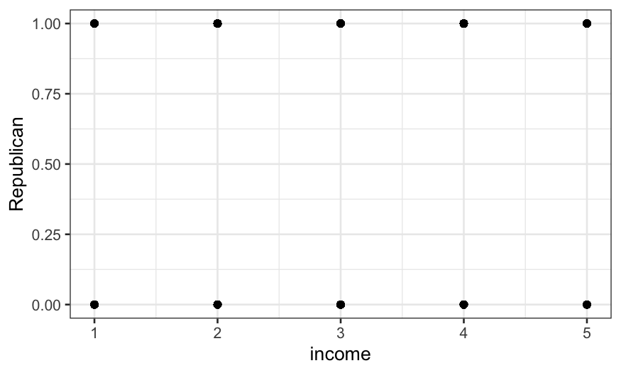
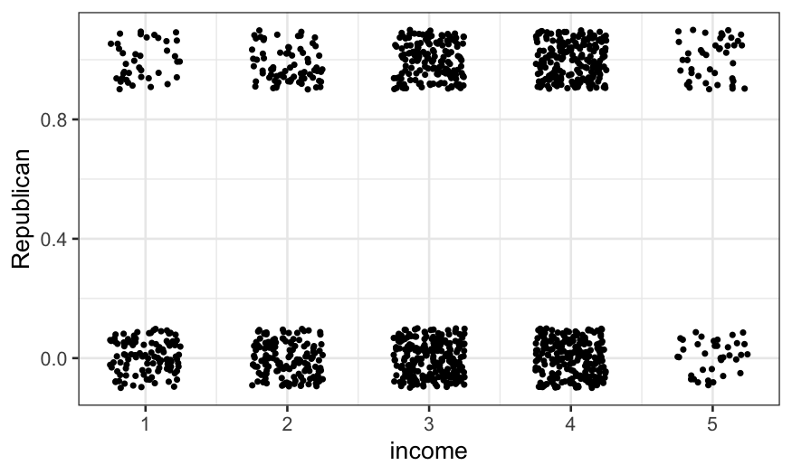
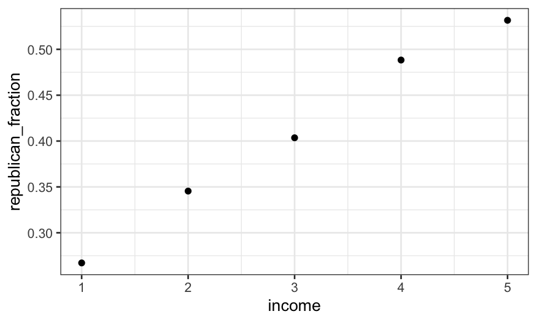
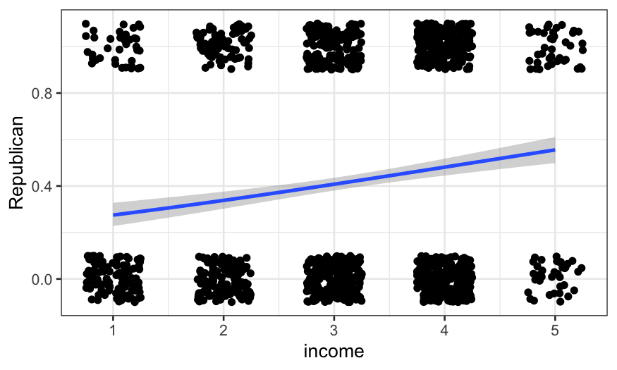
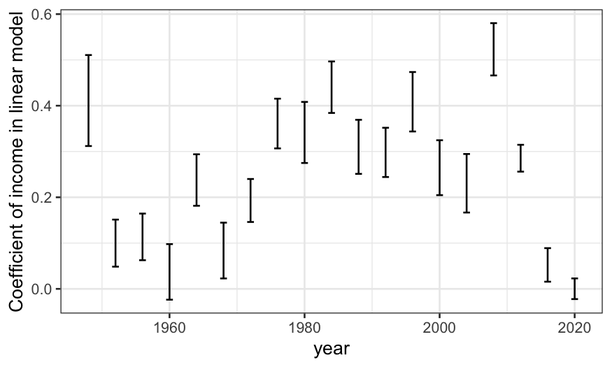
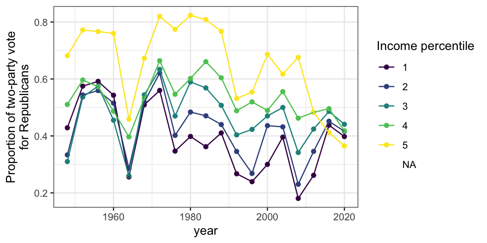
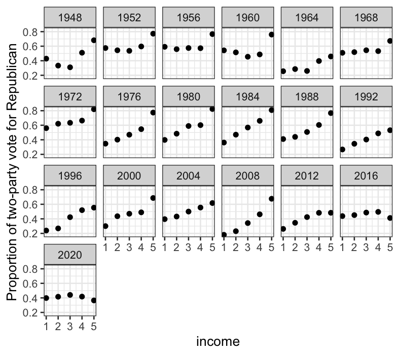

Julia Fukuyama
We are interested in understanding voting patterns, and in particular how vote for president is related to income.
There is data on this topic in the ANES dataset: for each election, they have demographic information on a subset of voters plus information about how they voted in the presidential elections.
The variables here have particularly uninformative names, but the ones we are interested in describe the year, income, and presidential vote. They are coded as:
The primary difference between our task here and the modeling that we’ve done earlier in the semester is that the variable we’re trying to predict, vote, is binary. That is, it only takes two values (here vote for Republicans vs. vote for Democrats) instead of taking as a value any real number. This turns out to be enough of a difference that we need a new modeling technique.
Income is measured on a scale from 1 to 5:
1: 0 to 16 percentile
2: 17 to 33 percentile
3: 34 to 67 percentile
4: 68 to 95 percentile
5: 96 to 100 percentile
Using percentiles allows comparability between years. Also note that this is really an ordinal variable but we might find some advantages in treating it as quantitative.
## Min. 1st Qu. Median Mean 3rd Qu. Max. NA's
## 1.00 2.00 3.00 2.87 4.00 5.00 5449## income
## 1 2 3 4 5
## 0.15804751 0.15120779 0.29807821 0.25447084 0.04729414Next we need the year for each observation. This is VCF0004.
## Min. 1st Qu. Median Mean 3rd Qu. Max.
## 1948 1970 1986 1985 2002 2016The coding is that “1” means the Democrat, “2” means the Republican, and “0” or “NA” means some other outcome. We want everything to be coded as 0, 1, or NA (using 0/1 coding is the standard way to code binary variables for logistic regression).
vote = ANES$VCF0704a
## First, change the zeroes to NA’s:
vote[vote == 0] = NA
## Then, to go from 2 representing Republican and 1 representing Democrat to 1 = Republican, 0 = Democrat, we just have to subtract 1
vote = vote - 1
summary(vote)## Min. 1st Qu. Median Mean 3rd Qu. Max. NA's
## 0.00 0.00 0.00 0.48 1.00 1.00 35118The variable really represents the fraction of the two-party vote that was for Republicans now, so for clarity let’s just rename it as such.
Let’s put everything in a data frame, and then filter to just presidential election years:
ANES_df = data.frame(year, income, Republican)
ANES_df = filter(ANES_df, year %in% seq(1948, 2016, 4))
summary(ANES_df)## year income Republican
## Min. :1948 Min. :1.000 Min. :0.000
## 1st Qu.:1972 1st Qu.:2.000 1st Qu.:0.000
## Median :1992 Median :3.000 Median :0.000
## Mean :1989 Mean :2.861 Mean :0.481
## 3rd Qu.:2012 3rd Qu.:4.000 3rd Qu.:1.000
## Max. :2016 Max. :5.000 Max. :1.000
## NA's :2524 NA's :14394The first question we can ask is about the relationship between income and the probability of voting Republican in 1992. Let’s start off just by plotting the two points. It turns out that this isn’t trivial because the variables are categorical, and we need to do some work to get anything useful. Jittering helps with categorical variables, and we use it here:
ANES92 = subset(ANES_df, year == 1992)
ggplot(ANES92, aes(x = income, y = Republican)) +
geom_point()
ggplot(ANES92, aes(x = income, y = Republican)) +
geom_jitter(height = 0.1, width = 0.25, size = .7)
The jittered plot is ok, but here it’s actually more useful to compute the fraction of the vote going to Republicans and either look at the table or plot those values.
(republican_fraction_by_income = ANES92 %>%
group_by(income) %>%
summarise(republican_fraction = mean(Republican, na.rm = TRUE)))## # A tibble: 6 × 2
## income republican_fraction
## <int> <dbl>
## 1 1 0.267
## 2 2 0.345
## 3 3 0.404
## 4 4 0.488
## 5 5 0.532
## 6 NA 0.433## zero values for income mean missing
ggplot(subset(republican_fraction_by_income, income != 0)) +
geom_point(aes(x = income, y = republican_fraction))
This gives the proportion (out of major party voters) who voted for Bush for each income group. Aside from group zero, which represents missing values of income, we see a strictly increasing pattern. How do we model this? Three options (not the only three) include:
Method 1 is the easiest to interpret: we get a slope that directly tells us the change in model probability of voting Republican as income goes up one category. However, linear regression for binary responses has two big limitations:
Method 3 isn’t really a model at all: it just returns the proportion
within each category who voted for Bush, the same as our
summarise() call gave us above. There’s something to be
said for not fitting restrictive models when you don’t have to. However,
if our goal is to fit more complex models or make comparisons between
different sets of data, as it eventually will be, then some degree of
simplification may be useful to understand the patterns in the data. Or
we might fit a simplifying model first, then go back and look at the
data in more detail and see if there are any important features our
model missed. That will be our basic approach here.
Method 2, logistic regression, should work well. It does require treating a predictor that isn’t inherently a numeric variable as numeric, and requires a parametric form (effects are linear on a logit scale.) However, most of the time, doing this is reasonable as long as the pattern of the probability with \(x\) is monotonic and as long as predictive accuracy is not the sole goal.
We fit such a logistic regression using income as a quantitative
variable and omitting missing values. Logistic regression is a special
case of a GLM, so we use the glm() function; specifying a
binomial family fits a logistic regression by default. Firstly, we can
just add the fitted curve to the jittered plot:
ggplot(ANES92, aes(x = income, y = Republican)) +
geom_jitter(height = 0.1, width = 0.25) +
geom_smooth(method = "glm", method.args = list(family = "binomial"))## `geom_smooth()` using formula = 'y ~ x'
We can also fit it explicitly:
##
## Call:
## glm(formula = Republican ~ income, family = binomial, data = ANES92)
##
## Deviance Residuals:
## Min 1Q Median 3Q Max
## -1.2733 -1.0235 -0.9086 1.2096 1.6069
##
## Coefficients:
## Estimate Std. Error z value Pr(>|z|)
## (Intercept) -1.26750 0.17789 -7.125 1.04e-12 ***
## income 0.29802 0.05379 5.541 3.01e-08 ***
## ---
## Signif. codes: 0 '***' 0.001 '**' 0.01 '*' 0.05 '.' 0.1 ' ' 1
##
## (Dispersion parameter for binomial family taken to be 1)
##
## Null deviance: 1719.1 on 1266 degrees of freedom
## Residual deviance: 1687.2 on 1265 degrees of freedom
## (1218 observations deleted due to missingness)
## AIC: 1691.2
##
## Number of Fisher Scoring iterations: 4The summary gives a lot of information; we’ll focus on the coefficients. The summary tells us that
\[ \text{logit}[P(\text{Republican})]=−1.27+0.298\times \text{income} \]
where the logit function is
\[ \text{logit}(x)=\text{log}_e [x/(1−x)] \]
To find \(P(\text{Republican})\), we invert the logit:
\[ P(\text{Republican})=\text{logit}^{-1} (-1.27 + 0.298 \times \text{income}) \]
where \[ \text{logit}^{-1}(y) = \frac{e^y}{1+e^y} \]
For a quick and dirty interpretation, the “divide by 4” rule is useful: the maximum change in probability associated with a one unit change in \(x\) is the coefficient of \(x\) divided by four. So going one income group changes the model probability by up to about 7.5%. This looks like it’s about the increase in the curve from income group 4 to group 5.
We can check how good the approximation is:
## the package boot has the inv.logit function
library(boot)
## P(Republican) evaluated at income = 4
inv.logit(-1.27 + 0.298 * 4)## [1] 0.4805099## [1] 0.5547792We’re not just interested in 1992. We want to know the relationship between income and vote for every Presidential election we have data for – is the relationship similar for every election, or are some elections different? Has there been a consistent change over time?
In programming terms, the easiest way to fit the same model on many subsets of the data is to write a function that subsets the data and fits the model, then to write a for loop to fit the model for each subset. There are much more computationally efficient approaches, but otherwise more efficiency usually isn’t worth the effort.
Here’s a function to fit our weighted logistic regression of vote on income for any given year.
logit_ANES_subset = function(my_year, data) {
## newdata = the subset of the data corresponding the year in question
newdata = subset(data, year == my_year)
## model where the data are a subset corresponding to my_year
model = glm(Republican ~ income, family = binomial,
data = newdata)
## getting just the output from the logistic regression fit that we need
output = c(my_year, summary(model)$coef[2, 1:2])
return(output)
}The function returns the year, the model’s coefficient for income, and the standard error of that coefficient. We shouldn’t take the standard error too literally, because we haven’t accounted for the complex design of the ANES surveys.
Let’s test the function out on 1992 (Bush-Clinton).
## Estimate Std. Error
## 1.992000e+03 2.980249e-01 5.378931e-02Once we’ve checked that it works, we can loop over every presidential election year in our dataset: every four years between 1948 and 2012:
We’ll display the results using ggplot.
geom_errorbar() lets us add one standard error bounds. We
shouldn’t take these too literally, just use them to get a ballpark idea
of uncertainty.
gg = ggplot(income_by_year, aes(x = year, y = income_coef, ymin = income_coef -
income_se, ymax = income_coef + income_se))
gg + geom_errorbar(width=1) +
ylab("Coefficient of income in linear model")
The income coefficient is positive for every election, meaning richer people were more likely to vote Republican every time (though 1960 was close.) The general trend was an increase in the income coefficient from 1952 to 1984, then a leveling-off. There was a huge drop from 1948 to 1952; unfortunately we don’t have data from before 1948 to know if the election was typical.
In our regressions, we treated income as a quantitative variable. A simpler approach would be to treat it as a factor, and simply track the weighted proportion of each income group that (two-party) voted Republican by year. Again, this is easiest to program (if inefficient) using a for loop.
To find means, I used use mean() in conjunction with
summarise() in dplyr. Let’s first work out how to do it for
the 1992 data.
## # A tibble: 6 × 2
## `factor(income)` prop_Republican
## <fct> <dbl>
## 1 1 0.267
## 2 2 0.345
## 3 3 0.404
## 4 4 0.488
## 5 5 0.532
## 6 <NA> 0.433income_prop = ANES_df %>%
group_by(income, year) %>%
summarise(prop_Republican = mean(Republican, na.rm = TRUE))## `summarise()` has grouped output by 'income'. You can override using the
## `.groups` argument.gg = ggplot(income_prop, aes(x = year, y = prop_Republican, group = income_ord, color = income_ord)) +
geom_point() + geom_line()
gg + ylab("Proportion of two-party vote\nfor Republicans") + labs(color = "Income percentile")
We now have a bit more detail on the trends and the aberrant results.
We can also draw lines to connect income groups by year. Because there are so many different years, we’ll facet them rather than color them.
ggplot(income_prop, aes(x = income, y = prop_Republican)) +
geom_line() +
facet_wrap(~ year, ncol = 6) + ylab("Proportion of two-party vote for Republican")
This yields less insight, but still has interesting features: notably the big magnitude of the uptick in Republicanism for the highest income group for almost every year.
Both data summaries (like our last plot) and models (like our logistic regressions) have their uses.
In practice, going back and forth between models and data summaries, as we did here, is often very useful in exploratory work. Models can usefully simplify the data so you can get the big picture. Then you can look a fuller data summary and bear in results that the big picture doesn’t explain.